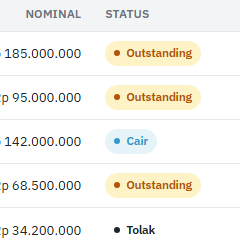
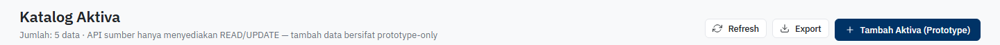
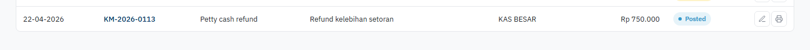
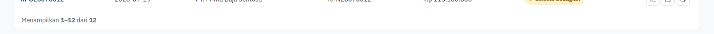
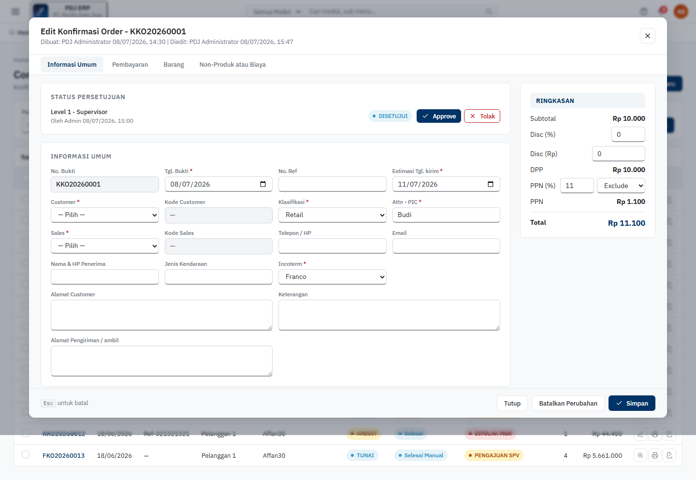

Two automated Playwright passes over the full application: a visual crawl of every module dashboard and sub-page for UI/UX consistency, followed by a functional pass that actually drives each list page's search, pagination, create, edit, and delete flows like a real user.
Playwright (Chromium) opened every top-level module, then clicked through every dashboard tile into every sub-page — 72 screens total, each captured as a full-page screenshot.
Each page was inspected in-browser for table structure, pagination, filter bars, button labels, status-pill classes, and icon-button accessibility attributes.
Automated signals were cross-checked against the actual screenshots and against source (.jsx / styles.css) to confirm each finding is real, not a false positive.
A whole status value in the Keuangan cash/bank module maps to a CSS class that doesn't exist, so it silently falls back to unstyled default text instead of the red "danger" pill used for every other rejected/cancelled state in the app.

Every other module spells the class cancelled. Fix: change 'cancel' to 'cancelled' on line 73.
The Katalog Aktiva page ships an internal implementation note as its visible subtitle, and the primary action button literally has "(Prototype)" in its label.

Every comparable catalog page in the same module uses a plain "Tambah [Entity]" label with no implementation caveats visible to the end user.
Every list page in Pembelian, Penjualan, Barang, Katalog Lain and Pengaturan ends with a "Menampilan X–Y dari Z" pager. In Keuangan, 15 of its 17 sub-pages have a full data table but no pager at all — only the two "Katalog" pages (Akun, Aktiva) have one, because they reuse the shared catalog-list component instead of the module's own transaction-list layout.


Harmless with today's ~5 rows of mock data, but the moment these pages back onto a real dataset, 14 of the app's ~72 screens will have no way to page through records while the rest of the app does. (Sales → Confirmation Order and Manufaktur → Planning Schedule Produksi are two additional one-off pages missing a pager, worth a quick check but lower priority than the module-wide Keuangan gap.)
Pembelian and Penjualan give every icon-only action button (edit, cancel, print) a title attribute, so hovering shows what it does. The equivalent buttons in Barang's four catalog pages, most of Keuangan, Manufaktur, and Pengaturan → Akses User have none — same icon, no affordance, and no accessible name for assistive tech.
Master/catalog pages use a "Tambah [Entity]" prefix (Tambah Pemasok, Tambah User). Most transaction pages use an "[Entity] Baru" suffix instead (PO Baru, Sales Order Baru, Jurnal Baru). Keuangan's cash/bank pages break both conventions with a bare, unspecific "+ Tambah" that doesn't name what's being added.
The prefix/suffix split by page type (master data vs. transaction document) reads as an intentional, if undocumented, convention — but Keuangan's transactional pages don't follow either half of it, which is the part worth reconciling.
The filter bar's "Cari" button and the toolbar's "Tambah/Baru" button both use .btn-primary (solid navy), on all ~58 list pages. It's applied consistently, so it isn't a cross-page inconsistency — but it does mean the page's one truly primary action (create) has no visual priority over a secondary one (search).
Consider giving the search/filter "Cari" button a secondary/ghost style app-wide, reserving the solid navy treatment for the page's primary create action.
The first pass above only checked what each screen looks like. This second pass drives every list page like a real user: type a search term and confirm results narrow, page to page 2, click "Tambah/Baru" and fill the form, click "Edit" and confirm the existing record loads back in, click delete/cancel and confirm it takes effect. 55 of the 72 pages have a real list+CRUD pattern to test this way (the other 17 are the Home dashboard, 7 module dashboards, and 9 pure settings/config forms with no table).
Every catalog page built on the shared KLSimpleCatalog / PgSimpleCatalog components renders a trash-icon delete button with the right icon, title, and hover state — but no onClick was ever wired to it. Clicking it is a complete no-op: no confirmation, no removal, no error, no toast.
The Edit button right next to it works correctly (opens pre-filled, saves). This reads like the delete handler was planned (icon, title, red hover style via .del all present) but the wiring was never finished.
Opening an existing, already-approved Confirmation Order in edit mode shows its No. Bukti and a couple of dates correctly, but the two required fields (Customer, Sales) reset to "— Pilih —" and all 8 contact/address fields (Telepon, Email, Alamat Customer, Keterangan, etc.) come back empty — despite the record clearly having had real values to get through its approval workflow.

If a user opens an existing order to make one small change and hits Simpan without noticing, this would overwrite a real customer/sales assignment with blank values — a real data-loss risk, not just a cosmetic gap.
The "Tambah BOM" Save button is never disabled, but its handler silently returns if no Barang Jadi is picked or no component rows were added — no toast, no inline error, no shake, nothing. The modal just sits there and the click appears to do nothing at all.
Every other validation-guarded save in the app (Jurnal Memorial, Pelunasan Piutang/Hutang, Manufaktur SPK) at least keeps the Save button visibly disabled so the user can tell something is required. This one looks clickable and just doesn't respond.
Distinct from Finding 07 (button present but broken): Kas Masuk/Keluar, Bank Masuk/Keluar, Transfer Masuk/Keluar, Giro Masuk/Keluar, and Pelunasan Piutang/Hutang only render Edit and Print row actions — the row-action set never includes a delete/cancel icon in the first place. Every comparable transactional module (Pembelian, Penjualan, Manufaktur) gives its documents a "Batalkan Transaksi" action.
Once a cash/bank entry is posted, there is currently no way to cancel or correct it from the list at all — combined with Finding 03 (no pagination on the same pages), this module is noticeably behind the others functionally, not just visually.
6 create-flow checks came back "blocked": Jurnal Memorial, Pelunasan Piutang, Pelunasan Hutang, Manufaktur SPK, and Manufaktur Hasil Produksi all keep their Save button genuinely disabled until stronger preconditions are met (e.g. a balanced debit/credit total, a minimum line count), and Planning Schedule Produksi keeps "Pilih SPK" disabled until a machine is picked from the sidebar. Automated generic form-filling can't satisfy those business rules — but that's the validation working as intended, not a defect. These are listed here for completeness, not as bugs.
| Page | Search | Pagination | Create | Edit | Delete | |
| Penjualan | ||||||
| Katalog Pelanggan | PASS | SKIP | PASS | WARN | PASS | |
| Confirmation Order | PASS | SKIP | PASS | FAIL | SKIP | |
| Sales Order | PASS | SKIP | PASS | PASS | PASS | |
| Delivery Order | PASS | SKIP | PASS | PASS | PASS | |
| Invoice | PASS | SKIP | PASS | PASS | PASS | |
| Sales Return | PASS | SKIP | PASS | PASS | PASS | |
| Pembelian | ||||||
| Katalog Pemasok | PASS | SKIP | PASS | PASS | PASS | |
| Purchase Request | PASS | SKIP | PASS | PASS | PASS | |
| Request for Quotation | PASS | SKIP | PASS | PASS | PASS | |
| Quotation | PASS | SKIP | PASS | PASS | PASS | |
| Goods Receive | PASS | SKIP | PASS | PASS | PASS | |
| Purchase Order | PASS | SKIP | PASS | PASS | PASS | |
| Nota Pembelian | PASS | SKIP | PASS | PASS | PASS | |
| Retur Beli | PASS | SKIP | PASS | PASS | PASS | |
| Barang | ||||||
| Barang Lain | PASS | SKIP | PASS | PASS | PASS | |
| Bahan Baku | PASS | SKIP | PASS | PASS | PASS | |
| Barang Jadi Umum & PU | PASS | SKIP | PASS | PASS | PASS | |
| BOM / Resep Produksi | PASS | SKIP | FAIL | PASS | PASS | |
| Mutasi Barang & Konsinyasi | PASS | SKIP | PASS | PASS | PASS | |
| Penyesuaian Barang | PASS | SKIP | PASS | PASS | PASS | |
| Stock Opname | PASS | SKIP | PASS | PASS | PASS | |
| Katalog Lain | ||||||
| Katalog Salesman | PASS | SKIP | PASS | PASS | WARN | |
| Katalog Gudang | PASS | SKIP | PASS | PASS | WARN | |
| Katalog Kategori Barang | PASS | SKIP | PASS | PASS | WARN | |
| Katalog Satuan Barang | PASS | SKIP | PASS | PASS | WARN | |
| Pelengkap Bahan Baku & Barang Umum | PASS | SKIP | PASS | PASS | WARN | |
| Katalog Akun Buku Besar | PASS | SKIP | PASS | PASS | WARN | |
| Katalog Aktiva | PASS | SKIP | PASS | PASS | WARN | |
| Katalog User | PASS | SKIP | PASS | PASS | WARN | |
| Katalog Grup User | PASS | SKIP | PASS | PASS | WARN | |
| Manufaktur | ||||||
| Surat Perintah Kerja | SKIP | PASS | BLOCKED | PASS | PASS | |
| Hasil Produksi & Pemakaian Bahan | PASS | PASS | BLOCKED | PASS | SKIP | |
| Bukti Pemakaian Barang Lain | PASS | SKIP | PASS | PASS | SKIP | |
| Retur Pakai Barang Lain | PASS | SKIP | PASS | PASS | SKIP | |
| Planning Schedule Produksi | SKIP | SKIP | BLOCKED | SKIP | SKIP | |
| Keuangan | ||||||
| Laba Rugi | PASS | SKIP | PASS | PASS | SKIP | |
| Laporan Arus Kas | PASS | SKIP | PASS | PASS | SKIP | |
| Neraca | PASS | SKIP | PASS | PASS | SKIP | |
| Kas, Bank & Giro | PASS | SKIP | PASS | SKIP | SKIP | |
| Kas Masuk | PASS | SKIP | PASS | PASS | SKIP | |
| Kas Keluar | PASS | SKIP | PASS | PASS | SKIP | |
| Bank Masuk | PASS | SKIP | PASS | PASS | SKIP | |
| Bank Keluar | PASS | SKIP | PASS | PASS | SKIP | |
| Transfer Masuk antar Kas/Bank | PASS | SKIP | PASS | PASS | SKIP | |
| Transfer Keluar antar Kas/Bank | PASS | SKIP | PASS | PASS | SKIP | |
| Giro Masuk | PASS | SKIP | PASS | PASS | SKIP | |
| Giro Keluar | PASS | SKIP | PASS | PASS | SKIP | |
| Pelunasan Piutang | PASS | SKIP | BLOCKED | PASS | SKIP | |
| Pelunasan Hutang | PASS | SKIP | BLOCKED | PASS | SKIP | |
| Katalog Akun Buku Besar | PASS | SKIP | PASS | PASS | SKIP | |
| Katalog Aktiva | PASS | SKIP | PASS | PASS | SKIP | |
| Jurnal Memorial | PASS | SKIP | BLOCKED | PASS | SKIP | |
| Pengaturan | ||||||
| Konfigurasi Sistem | form/config page, not a list | |||||
| Konfigurasi Organisasi | form/config page, not a list | |||||
| Konfigurasi Penjualan | form/config page, not a list | |||||
| Akses User | PASS | SKIP | PASS | PASS | WARN | |
| Menu | PASS | SKIP | PASS | PASS | WARN | |
| Grup Menu | PASS | SKIP | PASS | PASS | WARN | |
| Profil Perusahaan | form/config page, not a list | |||||
| Nilai Default | form/config page, not a list | |||||
| Keterangan Cetakan | form/config page, not a list | |||||
| Fitur Administrator | form/config page, not a list | |||||
| Login Pengguna | form/config page, not a list | |||||
| Tampilan & Tema | form/config page, not a list | |||||
| Home | |||
| Dashboard | — | form screenshot | |
| Penjualan | |||
| Dashboard | — | form screenshot | |
| Katalog Pelanggan | 22 | pager screenshot | |
| Confirmation Order | 13 | no pager screenshot | |
| Sales Order | 16 | pager screenshot | |
| Delivery Order | 9 | pager screenshot | |
| Invoice | 8 | pager screenshot | |
| Sales Return | 6 | pager screenshot | |
| Pembelian | |||
| Dashboard | — | form screenshot | |
| Katalog Pemasok | 5 | pager screenshot | |
| Purchase Request | 10 | pager screenshot | |
| Request for Quotation | 12 | pager screenshot | |
| Quotation | 12 | pager screenshot | |
| Goods Receive | 11 | pager screenshot | |
| Purchase Order | 12 | pager screenshot | |
| Nota Pembelian | 10 | pager screenshot | |
| Retur Beli | 10 | pager screenshot | |
| Barang | |||
| Dashboard | — | form screenshot | |
| Barang Lain | 40 | pager screenshot | |
| Bahan Baku | 40 | pager screenshot | |
| Barang Jadi Umum & PU | 40 | pager screenshot | |
| BOM / Resep Produksi | 40 | pager screenshot | |
| Mutasi Barang & Konsinyasi | 26 | pager screenshot | |
| Penyesuaian Barang | 30 | pager screenshot | |
| Stock Opname | 30 | pager screenshot | |
| Katalog Lain | |||
| Dashboard | — | form screenshot | |
| Katalog Salesman | 5 | pager screenshot | |
| Katalog Gudang | 5 | pager screenshot | |
| Katalog Kategori Barang | 6 | pager screenshot | |
| Katalog Satuan Barang | 6 | pager screenshot | |
| Pelengkap Bahan Baku & Barang Umum | 4 | pager screenshot | |
| Katalog Akun Buku Besar | 6 | pager screenshot | |
| Katalog Aktiva | 5 | pager screenshot | |
| Katalog User | 5 | pager screenshot | |
| Katalog Grup User | 4 | pager screenshot | |
| Manufaktur | |||
| Dashboard | — | form screenshot | |
| Surat Perintah Kerja | 10 | pager screenshot | |
| Hasil Produksi & Pemakaian Bahan | 10 | pager screenshot | |
| Bukti Pemakaian Barang Lain | 5 | pager screenshot | |
| Retur Pakai Barang Lain | 4 | pager screenshot | |
| Planning Schedule Produksi | 1 | no pager screenshot | |
| Keuangan | |||
| Dashboard | 7 | no pager screenshot | |
| Laba Rugi | 6 | no pager screenshot | |
| Laporan Arus Kas | 6 | no pager screenshot | |
| Neraca | 6 | no pager screenshot | |
| Kas, Bank & Giro | 9 | no pager screenshot | |
| Kas Masuk | 6 | no pager screenshot | |
| Kas Keluar | 5 | no pager screenshot | |
| Bank Masuk | 5 | no pager screenshot | |
| Bank Keluar | 5 | no pager screenshot | |
| Transfer Masuk antar Kas/Bank | 3 | no pager screenshot | |
| Transfer Keluar antar Kas/Bank | 3 | no pager screenshot | |
| Giro Masuk | 5 | no pager screenshot | |
| Giro Keluar | 3 | no pager screenshot | |
| Pelunasan Piutang | 4 | no pager screenshot | |
| Pelunasan Hutang | 3 | no pager screenshot | |
| Katalog Akun Buku Besar | 31 | pager screenshot | |
| Katalog Aktiva | 10 | pager screenshot | |
| Jurnal Memorial | 8 | no pager screenshot | |
| Pengaturan | |||
| Dashboard | — | form screenshot | |
| Konfigurasi Sistem | — | form screenshot | |
| Konfigurasi Organisasi | — | form screenshot | |
| Konfigurasi Penjualan | — | form screenshot | |
| Akses User | 4 | pager screenshot | |
| Menu | 5 | pager screenshot | |
| Grup Menu | 6 | pager screenshot | |
| Profil Perusahaan | — | form screenshot | |
| Nilai Default | — | form screenshot | |
| Keterangan Cetakan | — | form screenshot | |
| Fitur Administrator | — | form screenshot | |
| Login Pengguna | — | form screenshot | |
| Tampilan & Tema | — | form screenshot | |